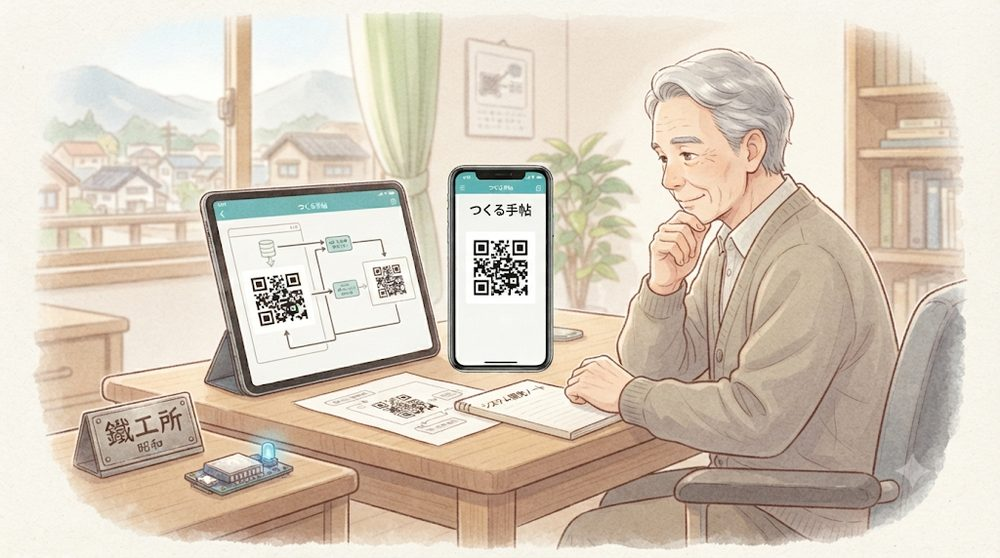
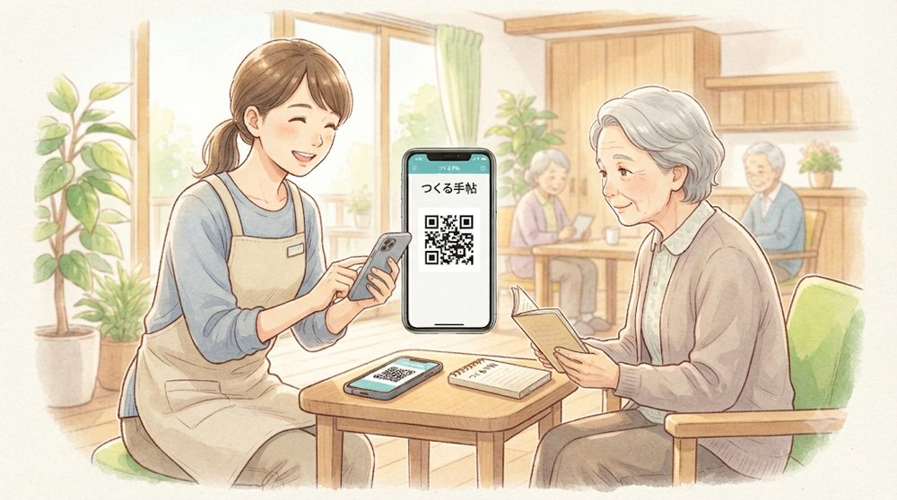
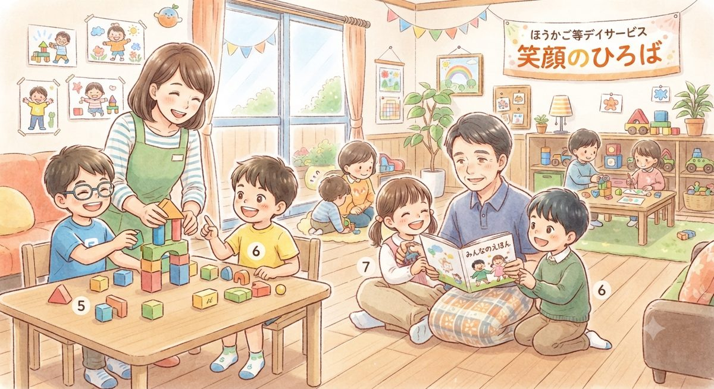

MAKING MY OWN TOOLS WITH AI
自分や家族のための
小さな道具を、スマホとAIでつくっています。
役に立ちそうな道具があれば、どうぞ自由にお使いください。自分用に作りかえてもらえたら、もっとうれしい。どれもブラウザで開くだけで使え、データは手元の端末の中だけに保存されます。

SCENES
手帖のある風景
自分のために作った道具が、少しずつ誰かの日常にも届いています。

父の鉄工所から始まった道具づくり。今はタブレットとスマホ、そしてAIを相棒に、自分の使い方に合わせた一枚を組み立てています。

サーバーは使いません。記録はQRコードにして、端末から端末へ。施設の中だけで、そっと受け渡されていきます。

放課後等デイサービスの現場にも。子どもたちの毎日を支える誰かの手もとに、この手帖が届いています。
■使いはじめる前に、ひとつだけ
ブラウザで開くだけでも、そのままお使いいただけます。ただ、これから続けてお使いになるなら、先にホーム画面に追加してから始めてください。
追加せずにお使いになると、しばらく開かない間に、書きためた記録が消えてしまうことがあります。また、ブラウザで何日か使ってから追加すると、それまでの記録が引き継がれないことがあります。ですから、追加はいちばん最初に。
iPhoneやiPadには、しばらく訪れていないサイトの保存データを自動で消す仕組みがあります。広告の追跡を防ぐためのものですが、この手帖が保存した記録も同じように消えてしまいます。ホーム画面に追加したものは、この対象から外れます。
ホーム画面に追加する手順を見る
iPhone・iPad
- Safariで開きます（Chromeなど他のブラウザからは追加できません）
- 画面下の共有ボタン（□に↑）を押します
- メニューを下にすべらせて「ホーム画面に追加」
- 「追加」を押します
Android
- Chromeで開きます
- 右上の「⋮」を押します
- 「アプリをインストール」または「ホーム画面に追加」
SHELF
手帖の棚
目的ごとに、六冊に分けました。気になる一冊をどうぞ。
← 横にすべらせると、棚の続きが見られます →
はじめに
このサイトは、私が人生の中で困ったこと、考えたこと、そして作ったものを残していくための記録帳です。
多くの人には意味が分からないかもしれません。それでも、どこかの誰かが「少し分かる」と感じてくれたら嬉しく思います。
ABOUT
このサイトについて
70歳になりました。出発点は、父が営む鉄工所。倒産で残ったのは、生産管理のために独学したパソコンの知識だけでした。30歳でシステム開発を始め、40年。会長に退いてできた自分の時間で出会ったのがAIです。大きな成功を狙うつもりはありません。誰か一人の役に立てば、それで価値がある。
記録が端末の外に出ないことは、お約束ではありません。通信するしくみが一行も入っていないので、送りようがないのです。中身は一枚のHTMLファイルですから、開けばすべて読めます。サーバーを持たずに、端末どうしで記録を受け渡すしくみについては、記録の手帖に書きました。
くわしい歩み「鉄からシステム、そしてAIへ」を読む →
しくみの説明「サーバーを持たずに、端末どうしで記録を渡す」を読む →
つくる
既製品で妥協しない。必要な機能だけを、自分の使い方に合わせて。
のこす
うまくいった点も、回り道も。再現できる粒度で書き残す。
わたす
AIに任せる部分、人が決める部分。その線引きを共有する。